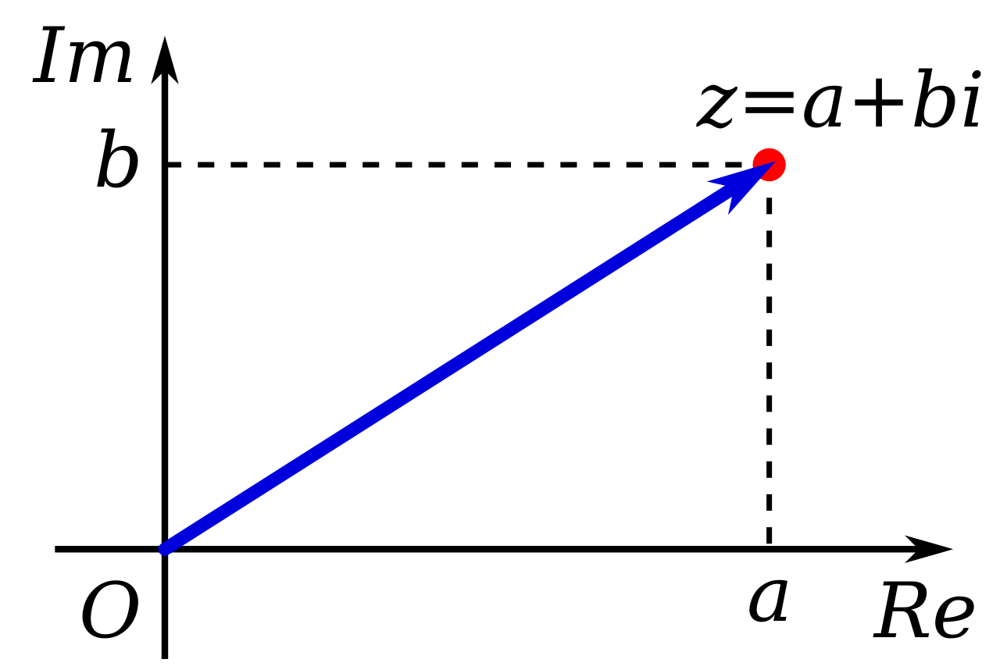
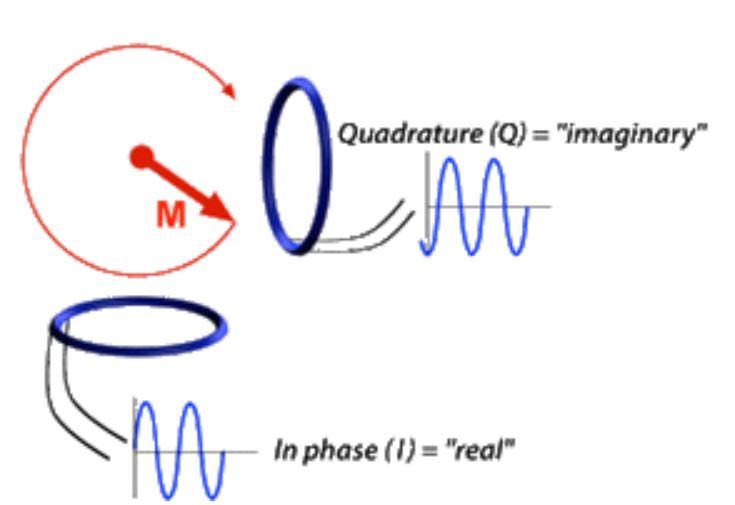
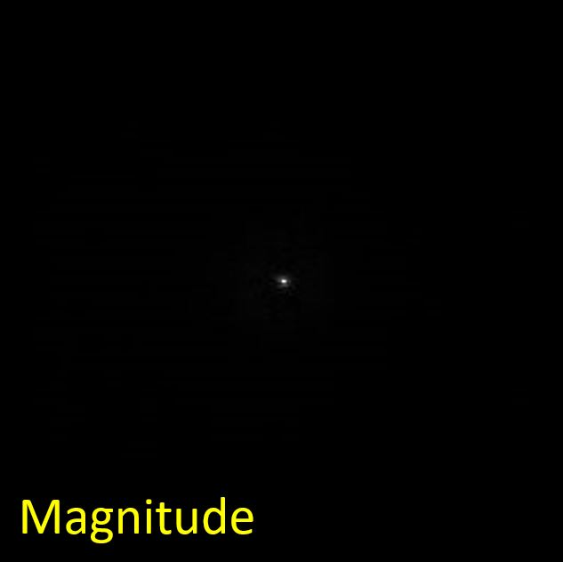
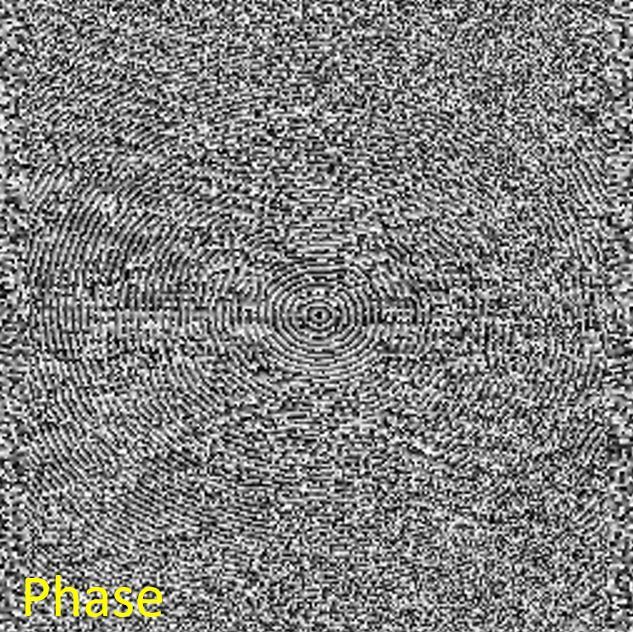

Overview
2. Complex Numbers and k-Space
Measured MRI signals are essentially radiofrequency waves summed over the imaged volume. Due to the nature of these waves and the underlying spin precession, the most convenient way of the mathematical formulation is the framework of complex numbers. Complex numbers are generally very well suited to describe the magnitude and phase of an oscillation/precession.
In this section, you will load a measured and provided MRI $k$-space into an array, using a provided function, and save it in an instance of a class for complex images, written by you. This class also provides calculation of magnitude and phase of the complex images from its real and imaginary parts.
2.1 Complex Numbers
2.1.1 A Single Complex Number by Itself

Figure 2.1. A complex number can be visually represented as a pair of numbers (a, b) forming a vector in the so-called complex plane. Re stands for the real part, shown on the horizontal axis, Im stands for the imaginary part, shown on the vertical axis, and i is the "imaginary unit". (reference: complex numbers on wiki)
As illustrated in Figure 2.1, a complex number $z$ is defined as,
$$ z = a + i \cdot b $$
Here, both $a$ and $b$ are real numbers. $i$ is the "imaginary unit", which is multiplied with the imaginary part of the complex number to denote the "2nd dimension" of the complex number. (Side note: For mathematical convenience of this powerful number framework, it satisfies $i^2 = -1$.) Likewise, you can think of the "real unit" as being $1$. One can also denote the complex number $z$ as an ordered pair,
$$ z = (\mathrm{Re}(z), \mathrm{Im}(z)) $$
where its real and imaginary part is $\mathrm{Re}(z) = a$ and $\mathrm{Im}(z) = b$, respectively. Noteworthy, the blue vector representation of $z$ in Figure 2.1 can be characterized by
-
the length of the vector, i.e., the absolute value or magnitude, $$ r = |z| = \sqrt{a^2 + b^2} $$
-
its angle to the positive $\mathrm{Re}$-axis, i.e., the argument or phase, $$\varphi = \mathrm{atan2}({b},{a})$$
Therefore, using Euler notation, one can write the complex number $z$ in the form
$$ z = |z| \cdot e^{i\varphi} $$
2.1.2 The Relation to MR Images
At every location of the object that is imaged in the MR scanner, the signal that is measured is produced by precessing (rotating) spins. The precessing spins create a precessing magnetization that results in radiofrequency radiation and can be measured with radiofrequency coils.

Figure 2.2. The precessing magnetization M that produces the MR signal is detected from two orthogonal directions, then demodulated using the multiplication of sinusoid or cosinusoid signals. They can be detected from two orthogonal directions to fully capture the signal rotation. In reality, only one coil can be used and demodulated to capture the rotation. (Reference: Real vs. Imaginary Signals)
In consequence, the MR image can be described by complex numbers, i.e., a 2D plane of oscillations that are complex numbers. After digitization, we can then treat MR images as 2D arrays of complex numbers, i.e., every element of the array is a complex number.
2.1.3 MR Signals Are Measured in $k$-Space
As mentioned in Section 2.1.2, MR signals are generated by precession of magnetization. In the context of the measurement process, this happens after a radiofrequency pulse excitation of the measured volume, which causes the magnetization to precess.
As covered in the lecture, the sum of the total magnetization of the excited spins that are apparent in the measured volume is what matters for the measured signal. The magic of MRI is that the volume can be manipulated by external magnet field gradients in such a way that the resulting signal is a Fourier transform of the image to be measured. (Making MRI feasible by using this method is a Nobel price idea!)
The Fourier transform of an image (space) represents the spatial frequencies and is usually called $k$-space. As such, the result of the MR measurement process and subsequent demodulation is an array storing complex $k$-space values (also known as spatial frequencies of the MR images). To reconstruct the MR images, the inverse Fourier transform is used to transform the signal from the frequency domain to the spatial/image domain. In other words, $k$-space is an intermediate step between MR scan and reconstructed image.
(Not mandatory: If you are interested in the Fourier transform, we encourage you to look at this page: Discrete Fourier Transform.)
2.2 The ComplexImage Class
In order to deal with 2D arrays of complex numbers in this project, we need to implement a new class, ComplexImage,
in ComplexImage.java. For the sake of consistency and efficiency, we will use the code base of exercises 1-4.
Accordingly, we will implement the real part and the imaginary part of our complex image each into an Image object.
package project;
import mt.Image;
public class ComplexImage {
protected mt.Image real; //Image object to store real part
protected mt.Image imag; //Image object to store imaginary part
protected String name; //Name of the image
protected int width;
protected int height;
}
Create constructors and getters. Remember: class objects, real, imag, and name, and class variables, width and height, must be set in the constructor. As in the Image class, there will be two types of constructors in complexImage class:
public ComplexImage(int width, int height, String name)
public ComplexImage(int width, int height, String name, float[] bufferReal, float[] bufferImag)
public int getWidth()
public int getHeight()
public String getName()
For the project, $k$-space data is provided in the widely used HDF5 data format. You can read $k$-space data using the LoadKSpace()
method in the given class ProjectHelpers.java
ComplexImage kSpace = ProjectHelpers.LoadKSpace("kdata.h5");
2.3 Images of Magnitude and Phase of Complex Arrays
We learned in Section 2.1 that both MR images and their spatial frequencies, i.e., $k$-space, are complex arrays, and are made up of and usually stored as real and imaginary parts. Also, that complex numbers can be characterized by their magnitude and phase.
One very important aspect of MRI images is the following: while both real and imaginary parts, or both magnitude and phase,
are needed to compute the image, the diagnostic information for the radiologist is mostly just visible in the magnitude image.
Therefore, let's implement methods to compute magnitude and phase images from real and imaginary parts.
Implement two methods calculateMagnitude() and calculatePhase() as methods of the ComplexImage class
for calculating magnitude and phase, respectively. Refer to the related equations above in subsection 2.1.1.
private Image calculateMagnitude(boolean logFlag)
private Image calculatePhase()
We are implementing a logFlag in the calculateMagnitude() method because we'd like to be able to indicate output of linear or logarithmic
scale (log10). The magnitude of $k$-space has a huge image intensity range between the center (low-frequency part, very large)
and the periphery (high-frequency part, very small). Taking a logarithm (log10) of the magnitude of $k$-space (point-wise) can reduce the huge image
intensity range for better visualization of the magnitude of $k$-space.
For access to the magnitude and phase images, we use getters:
public float[] getMagnitude()
public float[] getLogMagnitude()
public float[] getPhase()
Eventually, You can show the magnitude and phase images using the given method DisplayUtils.showImage(). Please use this method in the Project.java
|  |
 |
Figure 2.3. Magnitude images of k-space without (left) and with (right) logarithmic scale. The left figure shows only one small dot in the middle due to a huge image intensity range, while the right figure displays the whole intensity range on a scale that is visible to the human eye.

Figure 2.4. A phase image of k-space.
In the project report, you should
- Show the real and imaginary parts of the $k$-space
- Show the magnitude and phase images of the $k$-space
- Explain what those mean. Can you elaborate on why the phase does not show the same intensity variation as the magnitude?